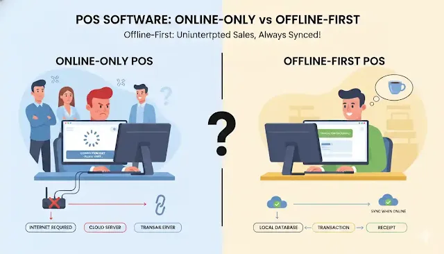

Offline POS Software
Start with Free Limited Plan
Imagine if your internet suddenly stops working during business hours. In today's retail, a reliable software is essential to keep things moving. With SadaPOS, your business operations continue to run as normal. You can still bill your customers, track sales, and even print receipts without a single interruption. You won’t even feel like anything has happened.

What makes SadaPOS different?
SadaPOS is designed for shop owners who value a user-friendly interface and a system that never fails. It handles all your offline transactions seamlessly, ensuring that your data stays safe even without a connection.
You can still bill customers, check how many items you have left, and print receipts, all without the internet. And the moment your internet comes back up, everything is automatically saved online on secure servers in the cloud. No extra buttons. No waiting. This is how a true offline POS software should work.
How a true offline POS works
- Your device does the work: It keeps your data safe, right there in your hands. No need to rely on the cloud for fast daily tasks.
- Zero interruptions: Sales and stock work even when the internet is down. No spinning wheels, no error messages, no frozen screens.
- Auto-sync background process: As soon as you’re online, everything updates automatically without you clicking anything.
Key Features
Let’s break down the must-have features that turn chaos into clarity.
IMEI & Serials Tracking
Every phone has a unique identifier, its IMEI number. Our POS system not only allows you to track each phone individually, but also helps prevent fraud.
Stock Management
Imagine selling a phone that is already out of stock. Embarrassment & frustration. With a professional POS system, you get real-time stock updates and low-stock alerts.
Customer & Supplier Ledgers
No more messy notebooks. The POS system securely stores your customer balances, supplier payments, and transaction histories in one safe place.
Warranty & Repair Tracking
Electronics shops not only sell but also provide repair services. Easily track warranty claims and manage repair tasks in a professional manner.
Faster Billing & Reduced Errors
Creating receipts instantly and serving more customers in less time. Because humans can make mistakes, from pricing to stock counting, our system stays accurate.
Better Customer Experience
Happy customers mean repeat customers. Providing prompt service, presenting accurate billing, and maintaining records builds loyalty and trust.
Built for Real Retail Businesses
Frequently Asked Questions
Everything you need to know about our offline capabilities.
What exactly is offline POS software, and why do I need it?
How is SadaPOS different from other POS offline systems?
Can I use SadaPOS on multiple devices or stores?
Is there a free plan? What’s included?
How safe is my business data with SadaPOS?
Start for Free | No Credit Card Required
Free plan includes offline-first functionality, basic inventory, and all core features. Plus, our customer support is always here to help you grow.
Start Now for Free